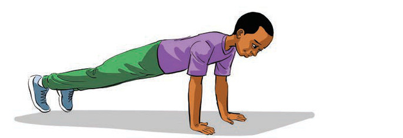
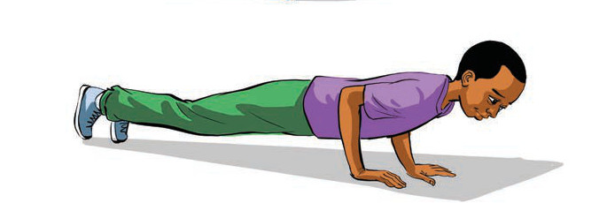

(c) Push-ups
Push-up exercise strengthens the muscles of the arms, shoulders and chest. This helps players when participating in sports such as football and netball in making powerful passes as well as competing physically with opponents.
How to do push-ups:
- Lie face down and support yourself on your hands and toes;
- Raise your body by pushing up your arms until the arms are fully extended;
- Lower your body slowly near to the floor without touching it; and
- Repeat 10 to 15 times for 3 sets, by following steps (i-iii) as shown in Figure 3.

